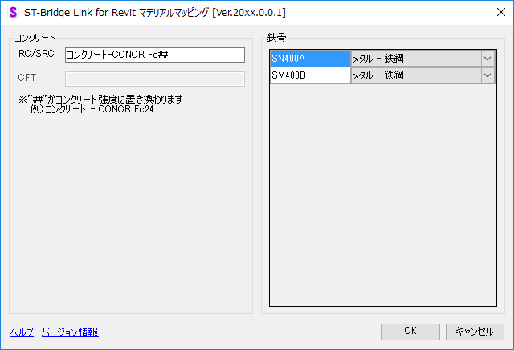
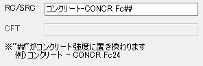
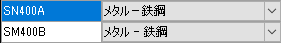

マテリアルマッピング
ST-Bridgeの材料のマテリアルのマッピングを行う。

コンクリート（RC/SRC,CFT）

使用するコンクリートマテリアル名称を入力する
鉄骨

対応するマテリアルをコンボボックスから選択、または直接入力する
※コンボボックスには、Revitデータ上に存在するマテリアルのうちカテゴリーが 「メタル」のものを設定する
※入力したマテリアルが存在しない場合はマテリアルを作成する
■ 各ボタン操作
ST-Bridge のモデルインポートを実行する
マテリアルマッピングを中止し
変換確認
へ戻る
『ST-Bridge Link』のヘルプを表示する
『ST-Bridge Link』のバージョン情報を表示する